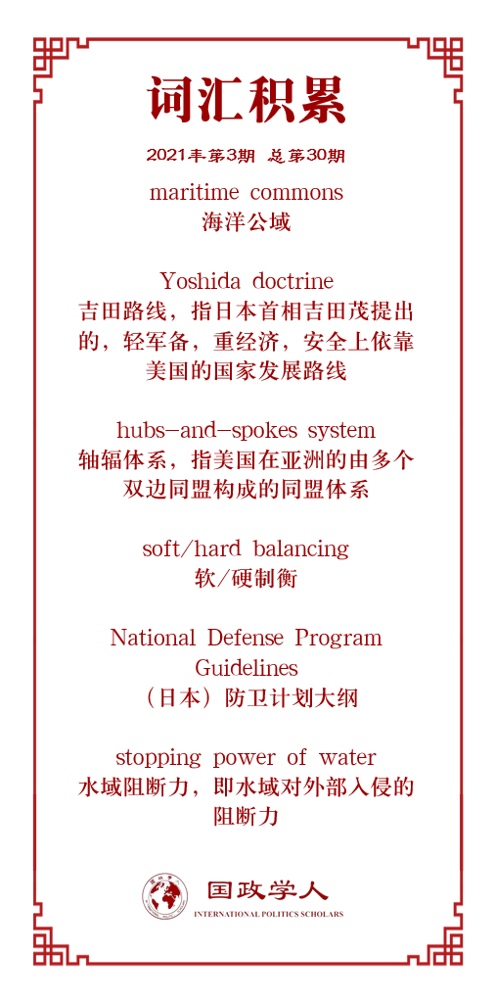

收录于合集

作品简介
【作者】 松田拓也（Matsuda Takuya）,伦敦大学国王学院博士生。他分别在庆应义塾大学法学部和约翰斯·霍普金斯大学高等国际关系学院取得学士和硕士学位。他的研究兴趣包括：美国大战略，国际安全，联盟政治，印太和中东的安全问题等。
【编译】 徐一凡（国政学人编译员，立命馆大学国际关系学院本科生）
【校对】 姚寰宇
【审核】 卫艺璇
【排版】 董诗
【美编 】马颖
【来源】 Matsuda, Takuya. “Explaining Japan’s post-Cold War security policy trajectory: Maritime Realism” Australian Journal of International Affairs , vol. 74, no. 6, 2020, pp. 687–703.
【归档】 《国际关系前沿》2021年第3期，总第30期。
期刊简介
Australian Journal of International Affairs，成立于1946年，由澳大利亚国际事务研究所负责编辑、出版。该期刊主要关注以亚太地区(但不限于)为主的国际政治、社会、经济和法律问题的学术研究，影响因子为1.171。
日本后冷战时期的安全政策走向：
海洋现实主义
Explaining Japan’s post-Cold War security policy trajectory:
Maritime Realism
松田拓也（Matsuda Takuya）
内容提要
日本为何在冷战后转向了更为积极的安全政策？在安倍首相任中，日本的安全政策引起了关于其不断变化之内核的大量讨论。本文指出了影响日本安全政策走向的两个自变量：均势（balance of power）考量和海洋公域（maritime commons）的安全准入。本文认为，日本的安全战略可以被理解为“海洋现实主义”（maritime realism），其中，有关海洋战略的自由国际主义和现实主义的要素结合在一起。日本不仅积极推动了美国对“海洋亚洲”（maritime Asia）的安全承诺，而且还专注于扩大其在海上安全方面的作用，因为印度- 太平洋地区的海上空间正在日益成为国际政治的博弈场。日本的安全政策与结构现实主义的预期相符，但却经常以自由国际主义的语言表达出来，并给予海军特殊的地位。本文通过结合国际关系研究和战略研究的概念，将关于联盟政治和大国竞争的理论讨论更进一步。本文对评价冷战后日本的防卫政策也有重大意义。
文章导读
01
对日本安全政策的不同解读
及其理论间隙
日本的对外政策受到国际环境中结构性变化的影响，冷战的结束便是其中一例。冷战的结束使得日本缓慢对国际体系的转型做出适应。在吉田路线（Yoshida doctrine）的指导下，日本在军事安全方面依靠美国，而注重于战后重建以及经济繁荣。一些日本学者将其称为“商人的国际政治观”。
在冷战之后，学者们对于日本安全政策的变化是否根本上颠覆了吉田路线，这一指导了冷战中日本对外政策的原则，展开了讨论。一些学者认为，日本的安全政策是从日美同盟内部演变而来的，日本逐渐但稳步地在国际安全中扮演了更大的角色，以在快速发展的东亚安全格局中管理美日同盟的效用。类似的观点指出日本的冷战后安全政策并未背离吉田路线，仍然认为非军事化是日本安全政策转型中的决定性特征。也有其它一些学者认为，最近的安全政策转型比较极端地将日本带离了原先的轨道。同时，建构主义者认为，冷战的结束并未对日本的安全政策带来太极端的转变，因为“国内结构和规范”已经嵌入了日本的决策进程。
这些关于吉田路线和冷战后日本安全转型的争论，对于理解联盟政治和日本冷战后安全政策走向具有重要的理论和经验意义。从自由国际主义的视角来看，日本- 特别是日美同盟是亚洲太平洋地区全面合作型安全秩序的一环，体现了“均势和基于共同体的安全秩序”的结合。尽管亚洲缺乏欧洲那样的更加明显的合作型安全体系，但美国在亚洲的轴辐体系（hubs- and-spoke system）同样为该地区的自由国际秩序打下了基础。事实上，美国在冷战后对亚太地区的自由秩序的追求已经达到了一些政策目标。而日本也正是在这一框架内寻求扩大其在安全方面的作用的。这些事实都表明，日本的安全政策转型体现了日本在维持自由国际秩序方面想发挥更大作用的意愿。
另一方面，从现实主义的视角来看，一些学者甚至认为日本意图遏制中国崛起的安全政策具有修正主义特征。这一观点不但被对日本的积极安全政策持谨慎态度的学者认可，也被那些认为美国应该在亚洲保持最小限度存在的学者所接受。他们认为区域内国家并不倾向于加入这一遏制联盟。
此外，现实主义和自由主义的分期在更广的海洋亚洲也有所体现。冷战后，“安全困境驱动的螺旋”开始在中美间浮现。中国起初欢迎日美同盟在冷战后继续存在，因为这样就能发挥“瓶盖”的作用压制日本发展能对华构成威胁的军事实力。此外，许多身居高位的美国官员和学者也表示，美国没有遏制中国的意愿。即便如此，中国还是开始将美国领导的印太安全体系视为“华盛顿过时的零和‘冷战’思维的体现”，意在遏制中国的崛起。
总的来说，在解释海洋亚洲，特别是日本的安全政策时，现实主义和自由主义的诠释之间存在着较大差异。仅仅应用结构现实主义关于均势的解释并不能解释冷战后日本安全政策的自由主义方面。与此同时，印太地区的轴辐双边同盟体系也有向多变安全框架转向的趋势，但是其内核（究竟是现实主义的还是自由主义的）尚不清楚。
02
构建理论框架：海洋现实主义
当下国际关系理论的构建非常依赖于欧洲大陆的历史经验。均势理论并不总能无条件地适用于包括印太地区在内的非欧地区，也不能解释日本政府在解读其对外政策时自由主义话语。本文认为，这是因为海军在不同领域有不同作用造成的，既包括军事外交职能，也包括治安（constabulary）职能。因此，海军在均势政治和全球公共产品准入方面都有很大作用。
海洋现实主义基于结构现实主义的基本前提。同时，海军在海洋现实主义中的特殊地位又使其与一些新古典现实主义的理念相呼应。冷战两极格局结束后，均势政治考量使日本将军事力量视为国家战略的重要部分，并强化了其国家安全机器。其中，日本显现出很强的海洋战略特征。冷战时，在吉田路线的指导下，海路防卫就是日本着重发展的领域，而且日本在日美同盟中也在海洋领域承担了更大的责任。由此带来的海洋公域准入保障也同日本的海上贸易与经济繁荣相得益彰。冷战后，特别是在安倍晋三第二次首相任期内中国的海洋扩张的背景下，日本的海洋安全政策变得愈加重要。中国正在挑战美国在西太平洋的霸权，因此中日在东中国海的领土争端对日本安全政策和总体大国竞争都有重大意义。这也说明，海洋现实主义是一种“有针对性的制衡”（targeted balancing），即一个国家不仅在总体上追求均势，也会在某一特定领域制衡其他国家，比如海上力量。
另一方面，海洋现实主义也强调价值和法治在治理中的作用。除外交和军事作用外，海军还有治安方面的作用，包括海上执法和治理。在冷战后，海军的作用已经越来越注重于治安方面，如维持和平和协助海上治理等。具体来说，美国作为西太平洋的海上霸权国，不仅是海上安全的提供者，也是海上公共产品的提供者和海上秩序的维护者。作为一个海洋现实主义国家，日本与美国结盟不仅是为了巩固美国对印太地区的安全承诺，也是为了维持一种对日本有利的海上秩序。
总的来说，海军在海洋领域有多种作用，不仅仅局限于大国竞争，还包括自由国际主义所注重的海洋治理的诸多方面。因此，海洋国家在追求均势的同时，也在维持海洋秩序的法治与规范。这一海洋现实主义特征一直能够在冷战后的日本对外政策走向中找到身影。
03
**
**
日本国家安全考量的构成
1.区域均势考量
自二战结束以来，均势就一直是日本安全政策和日美同盟的重要考量。冷战的全球两极格局在一定程度上将区域均势的重要性掩盖了起来，但冷战的结束则迫使日本重新考虑如何构建和维持区域内的均势。均势对印太地区的稳定十分重要，要求日本在增强自身国力的同时加强日美同盟。日本在确保美国的安全承诺和管理日益凸显的的大国竞争等方面的作用也在增强。冷战期间，日本的防卫政策就提出了“基盘防卫力构想”，意图至少保有最低限度的防卫力量以防止日本变成冷战竞争中的权力真空。在同一思路下，冷战后日本加强与澳大利亚等国的防务合作也是为了应对有可能的美国战略收缩。两者皆是出于对区域均势的考量。同时，日本防卫态势的升级和国家安全决策机构能力的扩大也凸显了其加强日美同盟同盟和促进美国对该地区安全承诺的意图。
2.印太地区海洋公域的准入
海洋公域或海洋通路的自由准入对日本的国家安全至关重要。在享受水域阻断力的同时，作为一个依赖海洋贸易和交通的商业国家，海洋通路的畅通对日本的生存非常重要。为应对中国的海上扩张等挑战，日本越来越将其定位为一个海洋国家。高坂正尧认为，日本的地理位置以及在国际体系中的地位使其能够从海洋商贸中获益。同时，高坂也是一位现实主义者，主张日本应该加强日美同盟以保障自身安全。其中，保障海路通畅，进而促进贸易则为日本大力发展海路防卫力量和加强日美同盟提供了正当理由。冷战后，“海洋国家”的含义从单纯的商贸领域扩展到安全领域，认为日本应该成为国际安全的积极参与者和贡献者，同时带有自由国际主义色彩。这样一来，海洋公域准入，海洋治理等自由主义话语就和日本对外政策的现实主义内核结合了起来。
04
结论
安倍任中的日本安全政策走向在很多方面都颇具特点。日本对外政策的内核通常都是现实主义的，但日本政府使用的话语确实自由国际主义的。本文指出了冷战后日本安全政策走向的两个主要驱动因素，亦是其因变量：均势政治考量以及国际公域准入考量。日本不仅寻求保障美国对印太地区的安全承诺（现实主义政策目标），同时还追求通过美国海军霸权确保海洋通路准入的海洋战略。其中，日本不断在“积极的和平主义”之下提及各种普世价值（自由主义话语）。此外，由于日本在1945年后一直追求成为贸易国家，其对海洋安全的关注也和日本防卫政策的规范性制约，即和平主义相一致。本文还指出，日本的安全政策走向显现出的对国际主义要素也和自由国际秩序的全球议程相匹配。同时，本文也展现了有利的均势（favorable balance of power）是如何支持自由国际秩序的。这也凸显了国际关系的复杂性，其中现实主义和自由主义往往以一种模棱两可的形式展现出来。
译者评述
本文以现实主义为基础解释了日本政府为何在外交和安全政策中使用的自由主义话语。从政策属性来看，日本冷战后的外交和安全政策是现实主义的，其目的是为了是地区均势更有利于日本和日美同盟。但是，日本的现实主义政策却被官员用自由主义的话语包装起来。作者指出，这是由日本的海洋国家属性所决定的。具体来讲，除国际安全方面的均势之外，对“贸易立国”的日本还来说，保障海洋公域的准入和海上通路的开放同样关乎国本。前者与现实主义相符，而后者则是与自由主义相符。
由此，作者认为，因为日本的安全诉求是现实主义、自由主义两方面的，所以也需要一种能够解释其两方面的理论，即作者提出的“海洋现实主义”理论。“海洋现实主义”确实一定程度上将自由主义元素结合进了现实主义之中，但也有一点生搬硬套之嫌。作者将日本的安全诉求分为相对现实主义的均势考量，和相对自由主义的海洋公域准入考量是没问题的。但是在原文的论述中，这两者似乎被割裂开了，变成了互不相关的两部分。在此基础上建立和诠释的“海洋现实主义”难免让人觉得有点东拼西凑，不是那么流畅自然。
译者认为，对于日本外交安全政策的理解，既要有作者那样在微观上的解构，也要在宏观上重构。事实上，日本的地区均势考量和海洋公域准入考量是互为表里的，两者虽然看似相去甚远（现实主义vs自由主义），但实际上在日本的安全环境中却是有内在联系的。战后日本的外交安全政策都是以日美同盟为基石的，只要抓住这一点，就能在宏观上对日本看似关联不大的两方面安全诉求进行重构。具体而言，日本想要维持的西太平洋均势即为美国优势的现状，而其想保障的海洋公域准入其实也是美国主导的海洋秩序。一般而言，开放的海洋秩序对海军大国有利，因为开放的海洋给海军大国提供了力量投射的手段。这样看，美国在西太平洋的海军优势和西太平洋的开放实际上是互为表里的。而在日美同盟框架下，美国优势和（美国主导的）开放海洋秩序对日本是有利的。所谓应对中国的海洋扩张，其实就是要维护现有的美国优势和与其互为表里的开放海洋秩序。如果中国海军实力崛起到与美国海军平起平坐的程度，那就有可能出现中美划分海上地盘的情况，那开放海洋秩序也就不复存在了。如此看来，日本的两方面安全诉求，看似是现实主义和自由主义的二分，但实际上正如美国海军优势和开放海洋秩序那样，是互为表里，有内在联系的。译者认为，如此以日美同盟为轴在宏观上重构日本的外交安全政策后，“海洋现实主义“的逻辑就流畅得多了。
词汇整理

文章观点不代表本平台观点，本平台评译分享的文章均出于专业学习之用, 不以任何盈利为目的，内容主要呈现对原文的介绍，原文内容请通过各高校购买的数据库自行下载。
好好学习，天天“在看”